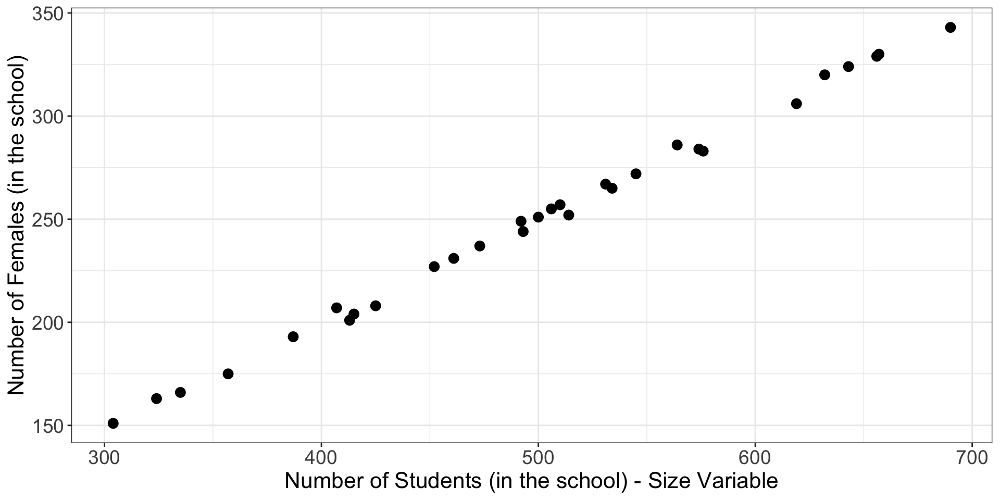
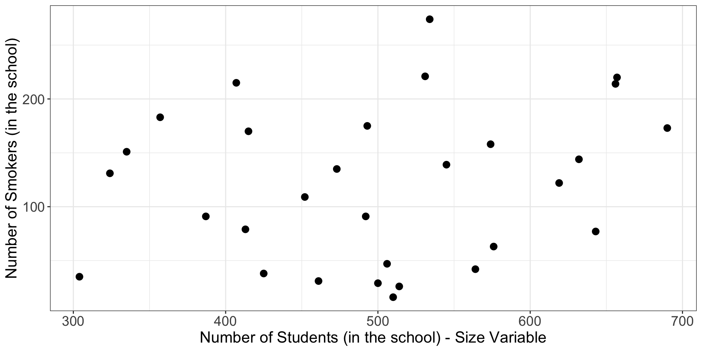

Probability Proportional
to Size Sampling
PUBHBIO 7225 Lecture 14
Topics
Sampling with unequal probabilities:
Probability Proportional to Size (PPS)
PPS with replacement
PPS without replacement
Activities
Readings
Assignments
One-stage designs
Sample \(n\) of \(N\) PSUs (sample = \(\mathcal{S}\))
\(\pi_i = \frac{n}{N}\) for PSU \(i\) → \(w_i = \frac{N}{n}\)
Unbiased estimate of total \(t\): \(\hat{t} = \sum_{i \in \mathcal{S}} w_i t_i\)
Two-stage designs
Stage 1: Sample \(n\) of \(N\) PSUs (sample = \(\mathcal{S}\))
Stage 2: Sample \(m_i\) of \(M_i\) SSUs for sampled PSU \(i\) (sample = \(\mathcal{S}_i\))
\(\pi_{ij} = \frac{n}{N}\frac{m_i}{M_i}\) for SSU \(j\) in PSU \(i\) → \(w_{ij} = \frac{N}{n}\frac{M_i}{m_i}\)
Unbiased estimate of total \(t\): \(\hat{t}= \sum_{i \in \mathcal{S}} \sum_{j \in \mathcal{S}_i} w_{ij} y_{ij}\)
These designs do not take into account that totals \((t_i)\) are often correlated with the size of PSUs \((M_i)\)
We saw that ratio estimation can improve estimation of \(\bar{y}_U\) – but can we improve on estimation of \(t\)?
There are \(N=5\) clinics in a town and you want to estimate the average number of patients seen in a day (in the town)
The population of clinics is:
| Clinic ID | Number of Doctors | Number of Patients Seen in a Day (\(y\)) |
|---|---|---|
| 1 | 2 | 10 |
| 2 | 3 | 20 |
| 3 | 4 | 50 |
| 4 | 5 | 60 |
| 5 | 10 | 150 |
True mean number of patients: \(\bar{y}_U = 58\)
The number of patients seen is correlated with the number of doctors (makes sense!).
We used this auxiliary data to create a more efficient sampling scheme than an SRS
That is the idea behind PPS sampling!
Design 1: SRS of \(n=2\) clinics (for each sampled clinic: \(\pi_i = n/N = 2/5\))
| Clinics Sampled | Selection Probability | Weighted Mean |
|---|---|---|
| 1,2 | 1/10 | 15 |
| 1,3 | 1/10 | 30 |
| 1,4 | 1/10 | 35 |
| 1,5 | 1/10 | 80 |
| 2,3 | 1/10 | 35 |
| 2,4 | 1/10 | 40 |
| 2,5 | 1/10 | 85 |
| 3,4 | 1/10 | 55 |
| 3,5 | 1/10 | 100 |
| 4,5 | 1/10 | 105 |
\(E(\bar{y})=58\) (unbiased)
\(V(\bar{y})=921\)
Design 2: Select largest clinic with certainty \((\pi_i = 1)\), one of the others with equal probability \((\pi_i = 1/4)\)
| Clinics Sampled | Selection Probability | Weighted Mean |
|---|---|---|
| 1,5 | 1/4 | 38 |
| 2,5 | 1/4 | 46 |
| 3,4 | 1/4 | 70 |
| 4,5 | 1/4 | 78 |
\(E(\hat{\theta})=58\) (unbiased)
\(V(\hat{\theta})=272\) \(\rightarrow\) a whole lot smaller than SRS!
Consider Activity 13.1, where you sampled students within schools using a 2-stage cluster sampling scheme
Population: \(N=30\) schools with a total of \(M_0 = \sum_{i = 1}^N M_i = 14{,}989\) students
Assume it is inexpensive to measure all students in a school, so use 1-stage cluster sampling
\(N=30\) schools
\(M_i\) = number of students per school = size variable
\(y_{ij}=\) indicator for if \(j\)th student in \(i\)th school is female
\(t_i= \sum_{j=1}^{M_i} y_{ij}\) = total number of females in school \(i\)
| School | # Students \((M_i)\) | # Females \((t_i)\) |
|---|---|---|
| 1 | 643 | 324 |
| 2 | 492 | 249 |
| 3 | 574 | 284 |
| 4 | 324 | 163 |
| ⋮ | ⋮ | ⋮ |
Many large-scale surveys have complex designs, with stratification and multi-stage clustering
Use lots of strata to increase precision
Often, so highly stratified that each stratum contains a small number of PSUs
Note that despite this, sometimes only 1 PSU is sampled in highly stratified designs
In these cases, the sampled PSUs are divided up into pseudo-PSUs for the purposes of variance estimation
You use these pseudo-PSUs just like “real” PSUs
You often see this when using publicly available survey data
Note: Sampling only 2 PSUs is actually pretty common!
Design A: SRS (without replacement) of \(n=2\) from the \(N=30\) schools
| School | Number of Students \((M_i)\) | Number of Females \((t_i)\) |
|---|---|---|
| 9 | 473 | 237 |
| 22 | 415 | 204 |
To estimate the total number of females:
\(\pi_i = n/N = 2/30 = 1/15\)
\(w_i = 1/\pi_i = N/n = 15\)
\(\hat{t}= \sum_{i \in \mathcal{S}} w_i t_i = (15 \times 237) + (15 \times 204) = 6615\)
By properties of SRS estimators (think way back!):
In my sample:
\(s^2 = \frac{1}{n-1} \sum_{i \in \mathcal{S}} (t_i - \bar{t})^2 = \frac{1}{2-1} \left[(237 - 220.5)^2 + (204 - 220.5)^2 \right] = 544.5\)
\(\displaystyle \widehat{V}(\hat{t})=N^2 \left(1-\frac{n}{N}\right)\frac{s^2}{n} = 30^2 \left(1 - \frac{2}{30} \right) \frac{544.5}{22} = 228690\)
\(\displaystyle \widehat{SE}(\hat{t}) = \sqrt{228690} = 478.2\)
Probability Proportional to Size (PPS) sampling = sample selection methods in which the probability of selection for a sampling unit is directly proportional to a size measure, \(X_i\), which is known for all units before sampling (with “larger” units more likely to be selected)
We will use throughout this lecture \(X_i = M_i =\) number of SSUs in the PSU
But, other \(X_i\) are possible
Note that we want to choose an \(X_i\) that is:
Proportional to the \(y_i\) that we are trying to estimate
Strictly positive \((>0)\)
PPSWR = Simplest PPS scheme, where inclusion probabilities are proportional to \(X_i\) and a PSU can be sampled more than once (with replacement)
Conduct \(n\) independent draws of a single PSU from the population
The probability of selecting PSU \(i\) on each draw is proportional to \(X_i\)
A PSU can be sampled more than once (with replacement)
Probability PSU \(i\) selected on any one draw = (“psi”) = \(\displaystyle \psi_i = \frac{X_i}{\sum_{i=1}^N X_i}\)
Note the difference:
\(\psi_i\) = probability PSU \(i\) is selected on a single draw
\(\pi_i\) = probability PSU \(i\) is in the sample (inclusion probability) = \(2 \psi_i - \psi_i^2\) (via addition rule for probabilities)
\(\psi_i \ne \pi_i\)
| School | \(M_i\) | \(\psi_i = M_i/(\sum_{i=1}^N M_i)\) |
|---|---|---|
| 1 | 643 | 643/14989 = 0.042898125 |
| 2 | 492 | 492/14989 = 0.032824071 |
| 3 | 574 | 574/14989 = 0.038294749 |
| 4 | 324 | 324/14989 = 0.021615852 |
| 5 | 493 | 493/14989 = 0.032890787 |
| ⋮ | ⋮ | ⋮ |
| Sum: | 14989 | 1 |
To obtain a PPS With Replacement, many possible sampling algorithms:
Easiest, conceptually, is the Cumulative Size Method:
Create a list of the PSUs with their sizes, \(M_i\)
Calculate the cumulative sums of \(M_i\) for each PSU
PSU 1: cumulative sum = \(M_1\)
PSU 2: cumulative sum = \(M_1+M_2\)
PSU 3: cumulative sum = \(M_1+M_2+M_3\)
etc.
Randomly select \(n\) integers between 1 and \(M_0 = \sum_{i=1}^N M_i\)
Sample the PSUs whose cumulative sum contains these \(n\) integers
Select PSU 1 if integer between \(1\) and \(M_1\)
Select PSU 2 if integer between \(M_1+1\) and \(M_1+M_2\)
Select PSU 3 if integer between \(M_1+M_2+1\) and \(M_1+M_2+M_3\)
etc.
| School | \(M_i\) | Cumulative Size | Cumulative Size (Values) | Range |
|---|---|---|---|---|
| 1 | 643 | \(M_1\) | 643 | 1 to 643 |
| 2 | 492 | \(M_1+M_2\) | 643 + 492 = 1153 | 644 to 1153 |
| 3 | 574 | \(M_1+M_2+M_3\) | 643 + 492 + 574 = 1709 | 1154 to 1709 |
| 4 | 324 | \(M_1+M_2+M_3+M_4\) | 643 + 492 + 574 + 324 = 2033 | 1710 to 2033 |
| ⋮ | ⋮ | ⋮ | ⋮ | ⋮ |
| Sum: | 14989 |
Randomly select \(n=2\) integers from 1 to 14989
My integers: 3572, 11002
These correspond to:
PSU 8: range 3376 to 3875
PSU 23: range 10935 to 11624
So my sample is PSUs 8 & 23
Note: a PSU could be selected twice!
Steps
Estimate the total based on each draw – i.e., from each sample of size 1
Average these \(n\) estimated totals to produce unbiased estimator of the total = \(\hat{t}_{wr} = \frac{1}{n}\sum_{i \in \mathcal{S}} \frac{t_i}{\psi_i}\)
Example
| School | \(M_i\) | \(\psi_i = M_i/(\sum_{i=1}^N M_i)\) | \(t_i\) | \(\frac{t_i}{\psi_i}\) |
|---|---|---|---|---|
| 8 | 500 | \(\frac{500}{14989} = 0.0333578\) | 251 | \(\frac{251}{0.0333578} = 7524.477\) |
| 23 | 690 | \(\frac{690}{14989} = 0.04603376\) | 343 | \(\frac{343}{0.04603376} = 7451.0533\) |
Note: If a PSU is selected into the sample more than once, you’ll include its estimate multiple times
Estimated variance of \(\hat{t}_{wr}\): \[\widehat{V}(\hat{t}_{wr}) = \frac{1}{n} \frac{1}{n-1} \sum_{i \in \mathcal{S}} \left( \frac{t_i}{\psi_i} - \hat{t}_{wr} \right)^2 = \frac{s^2}{n}\] where \(s^2\) = variance of the \(n\) individual estimates of the total (the \(\frac{t_i}{\psi_i}\))
| School | \(\psi_i\) | \(t_i\) | \(\frac{t_i}{\psi_i}\) |
|---|---|---|---|
| 8 | 0.0333578 | 251 | 7524.477 |
| 23 | 0.04603376 | 343 | 7451.0533 |
| average: | 7487.8 |
\(\widehat{V}(\hat{t}_{wr}) = \frac{1}{n} \frac{1}{n-1} \sum_{i \in \mathcal{S}} \left( \frac{t_i}{\psi_i} - \hat{t}_{wr} \right)^2 = \frac{1}{2} \frac{1}{(2-1)} \left[(7524.477-7487.8)^2 + (7451.0533-7487.8)^2 \right] = \frac{2695.5}{2} = 1347.6\)
\(\widehat{SE}(\hat{t}_{wr}) = \sqrt{1347.6} = 36.7\)
We know that for SRS, variance is reduced when sampling without replacement (compared to with replacement) – same holds for PPS!
But, now it is trickier to take a sample because the probability of selecting PSU \(i\) on the second draw is not the same as the probability of selecting PSU \(i\) on the first draw
Simple example illustrates this:
\(P(\)select PSU 1 on 1st draw\() =\psi_1\), but:
\(P(\)select PSU 1 on 2nd draw \(|\) selected PSU 1 on 1st draw\()=0\)
\(P(\)select PSU 1 on 2nd draw \(|\) didn’t select PSU 1 on 1st draw\()>0\)
You specify the inclusion probabilities, \(\pi_i = n \psi_i\)
Which imply the weights: \(w_i = \frac{1}{\pi_i} = \frac{1}{n \psi_i}\)
Note the implied restriction:
\[ \begin{split} \pi_i = n \psi_i &< 1 \\ \psi_i &< 1/n \\ \frac{X_i}{\sum_{i=1}^N X_i} &< 1/n \end{split} \]
No one PSU can be so big its \(X_i\) takes up more than \(1/n\) of the total of the \(X_i\)
If such a PSU exists, it should be selected with certainty (certainty unit)
Horvitz-Thompson Estimator for the total under PPSWOR: \[\hat{t}_{HT} = \sum_{i \in \mathcal{S}} \frac{t_i}{\pi_i} = \sum_{i \in \mathcal{S}} \frac{t_i}{n \psi_i} = \sum_{i \in \mathcal{S}} w_i t_i\]
| School | \(M_i\) | \(t_i\) | \(\psi_i\) | \(\pi_i = n \psi_i\) | \(w_i = \frac{1}{\pi_i}\) |
|---|---|---|---|---|---|
| 14 | 531 | 267 | \(\frac{531}{14989} = 0.035426\) | \(2*0.035426 = 0.070852\) | \(\frac{1}{0.070852} = 14.11\) |
| 24 | 335 | 166 | \(\frac{335}{14989} = 0.022350\) | \(2*0.022350 = 0.044699\) | \(\frac{1}{0.044699} = 22.37\) |
The variance of the PPSWOR estimator depends on two sets of probabilities:
Selection (Inclusion) probabilities: \(\pi_i = P(\)PSU \(i\) in sample\()\)
Pairwise Selection (Inclusion) probabilities: \(\pi_{ij}=P(\)PSU \(i\) and PSU \(j\) in sample\()\)
The \(\pi_{ij}\) are not just products of the \(\pi_i\)!
For \(n=2\):
\(P(i\) first, \(j\) second\() = P(i\) first\()\times P(j\) second \(| i\) first\() = \psi_i \times \frac{\psi_j}{1-\psi_i}\)
\(P(j\) first, \(i\) second\() = P(j\) first\()\times P(i\) second \(| j\) first\() = \psi_j \times \frac{\psi_i}{1-\psi_j}\)
\(\pi_{ij} = P(i\) and \(j\) in sample\() = P(i\) first, \(j\) second\() + P(j\) first, \(i\) second\()\)
\(\pi_{ij} = \psi_i \times \frac{\psi_j}{1-\psi_i}+ \psi_j \times \frac{\psi_i}{1-\psi_j}\)
Must have the \(\pi_{ij}\) to get an unbiased estimate of \(V(\hat{t}_{HT})\)
Complex!
\[V(\hat{t}_{HT}) = \sum_{i=1}^N \frac{1- \pi_i}{\pi_i} t_i^2 + \sum_{i=1}^N \sum_{k=1, k\ne i}^N \frac{\pi_{ik}-\pi_i \pi_k}{\pi_i \pi_k}t_i t_k = \frac{1}{2} \sum_{i=1}^N \sum_{k=1, k\ne i}^N (\pi_i \pi_k - \pi_{ik}) \left(\frac{t_i}{\pi_i}-\frac{t_k}{\pi_k}\right)^2 \]
Horvitz-Thompson variance estimator (based on 1st expression) \[\widehat{V}_{HT}(\hat{t}_{HT}) = \sum_{i \in \mathcal{S}} (1-\pi_i)\frac{t_i^2}{\pi_i^2} + \sum_{i \in \mathcal{S}} \sum_{k \in \mathcal{S}, k \ne i} \frac{\pi_{ik}-\pi_i \pi_k}{\pi_{ik}} \frac{t_i}{\pi_i} \frac{t_k}{\pi_k}\]
Sen-Yates-Grundy variance estimator (based on 2nd expression) \[\widehat{V}_{SYG}(\hat{t}_{HT}) = \frac{1}{2}\sum_{i \in \mathcal{S}} \sum_{k \in \mathcal{S}, k \ne i} \frac{\pi_{ik}-\pi_i \pi_k}{\pi_{ik}} \left( \frac{t_i}{\pi_i} - \frac{t_k}{\pi_k} \right)^2\]
Several problems with these variance estimators, \(\widehat{V}_{HT}(\hat{t}_{HT})\) and \(\widehat{V}_{SYG}(\hat{t}_{HT})\)
Publicly available datasets usually don’t have the joint inclusion probabilities included
For some designs the \(\pi_{ij}\) may be hard to calculate
\(\widehat{V}_{HT}(\hat{t}_{HT})\) and \(\widehat{V}_{SYG}(\hat{t}_{HT})\) can actually produce negative variance estimates for some designs!
For these reasons, we often use the with replacement variance estimate (the one on this slide) \[\widehat{V}_{WR}(\hat{t}_{HT}) = \frac{1}{n} \frac{1}{n-1} \sum_{i \in \mathcal{S}} \left( \frac{t_i}{\psi_i} - \hat{t}_{HT} \right)^2 = \frac{n}{n-1}\sum_{i \in \mathcal{S}} \left( \frac{t_i}{\pi_i} - \frac{\hat{t}_{HT}}{n} \right)^2\]
Consequence: result is (usually slightly) conservative – i.e., variance too big
Benefit: don’t need pairwise inclusion probabilities, and never get a negative variance!
Convenience: \(\widehat{V}_{WR}(\hat{t}_{HT})\) is what is calculated in most software (including Stata and R)
For my PPSWOR sample that contains schools 14 and 24:
total SE
totfemale 7482.1 54.728\(\hat{t}_{HT} = 7482\) (same as the hand-calculation)
\(\widehat{SE}_{WR}(\hat{t}_{HT}) = 54.7\)
Compare to without-replacement variance estimation:
\(\widehat{SE}_{HT}(\hat{t}_{HT}) = \text{N/A}\) (variance estimate is negative!)
\(\widehat{SE}_{SYG}(\hat{t}_{HT}) = 53.1\) (slightly smaller than with-replacement estimate)
PPS Sampling (Parts 1 & 2)
Two designs compared for sampling schools: (A) SRS, (B) PPSWOR
Both provide unbiased estimates of the true total
In terms of theoretical variances, if size variable is related to \(t\), \(V_{SRS} > V_{PPSWR} > V_{PPSWOR}\)
For the schools data, relationship between size and totals:


PUBHBIO 7225